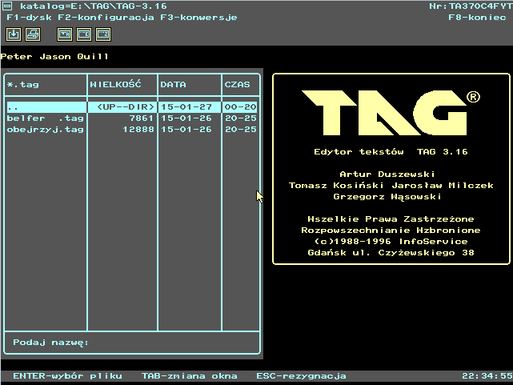
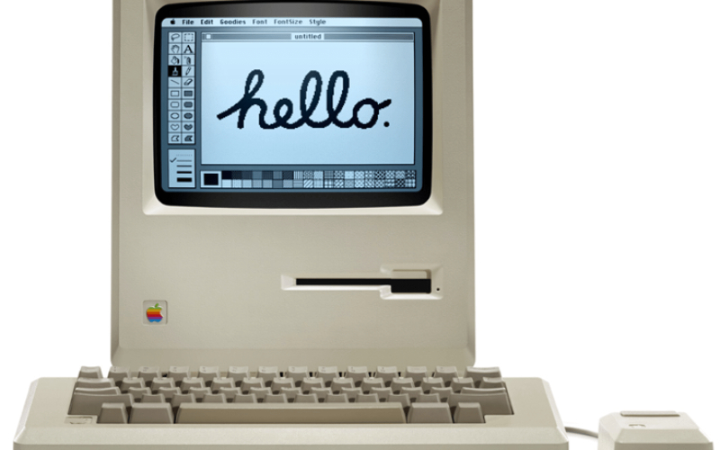
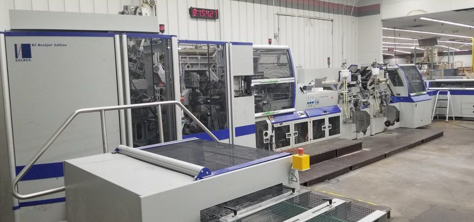
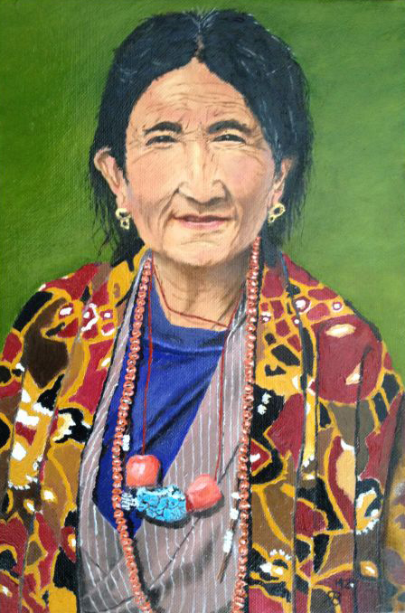

Znamy się mało... więc może ja bym powiedział parę słów o sobie – najpierw. Urodziłem
się... w Warszawie, w 1970 roku, w listopadzie. Znaczy, w połowie listopada... właściwie w drugiej
połowie listopada,
właściwie... dokładnie 25 listopada. No... to tyle może o sobie – na początek...
Zainteresowania
Zawsze pociągały mnie komputery. Już w latach 1989-1990 używałem programu "Ventura" do
składu tekstu. Tak wyglądał program:
Program Ventura
Był też "TAG" polski edytor tekstu. Pracował w systemie MS-DOS. Był jak na tamte czasy
rewelacyjny. Niestety wyparł go teraz wszechobecny "Microsoft WORD 6.0". Tak wyglądał "TAG":

Edytor tekstu "TAG"
W Irlandii na szkoleniu poligraficznym w 1990 roku zetknąłem się z Apple Macintosh. To
było cudo, które mnie oszołomiło. Wtedy z pomocą Gerrego (mój nauczyciel) złożyłem swoją pierwszą własną
wizytówkę! I w dodatku wydrukowałem ze 100 sztuk. Tak wtedy wyglądał Makintosh:

Komputer Makintosh
Później już poleciało. W 1991 roku otworzyliśmy z dziewczyną (teraz żoną) biuro podróży.
Zajmowałem się obsługą informatyczną i księgowością. Za pierwsze zarobione pieniądze kupiliśmy fax,
maszynę do pisania dla Ewy i komputer dla mnie. Komputer stał się nieodzowny w prowadzeniu biznesu. Dużo
by opowiadać. W skrócie to pochłonęło mnie DTP (Desktop Publisching), projektowanie komputerowe, skład
tekstu. Projektowałem i przygotowywałem do druku katalogi, druki, wizytówki etc. nawet na zlecenie. Np.
"Merkuriusz Polski" - książka teleadresowa właśnie w Venturze. Nie mniej jednak wszystkie
doświadczenia "komputerowe" doprowadziły mnie do chęci zgłębienia sztuki programowania profesjonalnego.
Do tej pory to było to trochę chaotyczne ale dawałem radę. Zrobiłem parę stron internetowych, serwis
wystawiania dokumentów dla naszego biura oparty na bazie danych. Ostatnio zaprogramowałem coś co
nazwałem "Ewidencja Czasu Pracy". Wylicza moje finanse na podstawie godzin przepracowanych w drukarni.
Tak teraz pracuję w drukarni jak przed 1991 rokiem. Historia zatoczyła koło. Tak wygląda maszyna do tzw.
twardej oprawy, którą obsługuję jako operator:

Kolbus BF 530
Hobby
Moją pasją jest też malarstwo. W 2012 roku odkryłem w sobie "talent". Tak mówią.
Namalowałem co nie co. Poniżej mój pierwszy obraz olejny:

Zapraszam do galerii na moim profilu na facebooku. Będę wdzięczny za komentarz pod pracami,
które Wam się podobają.
Kręci mnie też obróbka stali w sensie knifemaking lub płatnerstwo (samodzielne wykonanie
noża), oraz rymarstwo i tapicerowanie.
A to mój piesek Tofik
Tofik to porządny ratlerek o sercu lwa. Nie boi się nawet owczarków niemieckich itp.
Rok temu zachorował na oko co doprowadziło do usunięcia gałki ocznej. Nie martwcie się radzi sobie
rewelacyjnie bez oczka.